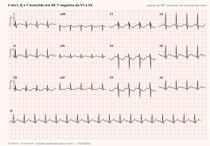

Pneumologia e cardiologia · 75 min · AHA/ACC 2026 · monografia
A diretriz americana de março de 2026 troca o vocabulário que a clínica usava desde 2011: maciço, submaciço e não maciço saíram; entraram cinco categorias clínicas, A a E, com subcategorias e um modificador respiratório. A troca não é cosmética — a categoria diz onde o paciente fica, quando se aciona a equipe de resposta, quando se cogita reperfusão e quem vai para casa da própria emergência.
Em 2011, uma declaração da AHA dividia o TEP em baixo risco, submaciço — normotenso com disfunção de ventrículo direito ou troponina positiva — e maciço, sistólica abaixo de 90 mmHg por mais de 15 minutos ou necessidade de inotrópico. Em 2019, a ESC partiu o meio do espectro em intermediário-baixo e intermediário-alto, conforme o escore de gravidade viesse com um ou com os dois marcadores. Em 2026, a AHA/ACC propôs as Acute Pulmonary Embolism Clinical Categories, de A a E.
Três problemas motivaram a troca. A heterogeneidade dentro de cada faixa: o "intermediário-alto" ia de troponina discretamente positiva até quem estava a uma hora do colapso. O paciente cuja deterioração é respiratória, não hemodinâmica, que agora recebe o modificador R — hipoxemia, taquipneia ou necessidade de oxigênio (C3R, D2R). E o estado pré-falência — hipotensão transitória que respondeu a volume, choque normotenso —, que o binário estável/instável jogava no lado estável.
Menos de 10% dos investigados para TEP acabam com o diagnóstico — é esse número que justifica a insistência em probabilidade pré-teste, e o limiar de segurança aceito para uma estratégia diagnóstica é 2% de falha em três meses. História dirigida e exame físico para estimá-la são classe 1, nível A. Os sintomas mais comuns são dor pleurítica e dispneia; hemoptise, síncope e choque são menos frequentes — e é a raridade deles que faz a síncope inexplicada com fator de risco merecer investigação agressiva. No exame, procurar turgência jugular, impulsão paraesternal, hiperfonese de P2, atrito pleural e edema unilateral de panturrilha.
| Escore de Wells para TEP | Pontos |
|---|---|
| Sinais e sintomas clínicos de trombose venosa profunda | 3 |
| TEP é mais provável que os diagnósticos alternativos | 3 |
| Frequência cardíaca acima de 100 bpm | 1,5 |
| Imobilização ≥ 3 dias ou cirurgia nas 4 semanas anteriores | 1,5 |
| Trombose venosa profunda ou TEP prévios | 1,5 |
| Hemoptise | 1 |
| Câncer | 1 |
| Padrão: baixa < 2 · moderada 2 a 6 · alta > 6. Modificado: provável > 4 · improvável ≤ 4 | |
| Escore de Genebra revisado | Revisado | Simplificado |
|---|---|---|
| Idade acima de 65 anos | 1 | 1 |
| Trombose venosa profunda ou TEP prévios | 3 | 1 |
| Cirurgia sob anestesia geral ou fratura de membro inferior no último mês | 2 | 1 |
| Câncer ativo | 2 | 1 |
| Dor unilateral de membro inferior | 3 | 1 |
| Hemoptise | 2 | 1 |
| Frequência cardíaca de 75 a 94 bpm | 3 | 1 |
| Frequência cardíaca ≥ 95 bpm | 5 | 1 |
| Dor à palpação de trajeto venoso profundo e edema unilateral | 4 | 1 |
| Revisado: baixa 0–3 · intermediária 4–10 · alta ≥ 11. Simplificado: baixa 0–1 · intermediária 2–4 · alta 5–7; ou improvável 0–2 · provável 3–7 | ||
| PERC — os oito critérios |
|---|
| Idade abaixo de 50 anos · frequência cardíaca abaixo de 100 bpm · saturação ≥ 95% · sem hemoptise · sem estrogênio · sem trombose venosa profunda ou TEP prévios · sem edema unilateral de perna · sem cirurgia ou trauma exigindo hospitalização nas 4 semanas anteriores |
| Como usar: só quando a probabilidade pelo julgamento clínico já é menor que 15% — por exemplo Wells abaixo de 2. Preenchidos todos os oito, a probabilidade é baixa e nenhum teste adicional é necessário, nem D-dímero. |
O TEP é improvável quando três condições coexistem: D-dímero abaixo do limiar, probabilidade clínica baixa ou intermediária — abaixo de 50% — e paciente não anticoagulado. O terceiro item é esquecido e é decisivo: quase todos os estudos de validação excluíram quem já estava anticoagulado, e o YEARS só foi estudado fora da anticoagulação terapêutica.
| Recomendação | Classe | Nível |
|---|---|---|
| Probabilidade baixa ou intermediária: D-dímero ajustado à idade abaixo de idade × 10 µg/L em ensaios que reportam unidades equivalentes de fibrinogênio exclui TEP e a necessidade de imagem | 2a | B-R |
| O algoritmo YEARS pode ser útil para identificar quem não precisa de imagem | 2a | B-R |
| Em gestantes, pode ser razoável usar o YEARS adaptado à gestação | 2b | B-NR |
O ajuste existe porque o D-dímero tem especificidade baixa, que despenca com a idade: aos 80 anos, valor acima de 500 µg/L é quase a regra e quase nunca é TEP. Numa validação de 3346 pacientes, a falha em três meses foi de 0,3% entre maiores de 50 anos com D-dímero entre o corte padrão e o ajustado. Duas ressalvas: em alta prevalência essas estratégias podem deixar TEP passar, e o limiar vale para laudos em unidades equivalentes de fibrinogênio.
| Recomendação | Classe | Nível |
|---|---|---|
| A angiotomografia é recomendada em preferência à cintilografia ventilação-perfusão | 1 | B-R |
| Com angiotomografia negativa ou SPECT normal, o ultrassom venoso não é útil para prosseguir a investigação | 3: No Benefit | B-NR |
| Na suspeita de TEP, o ecocardiograma não é recomendado para confirmar ou afastar o diagnóstico | 3: No Benefit | B-NR |
A angiotomografia é o padrão por acessibilidade, custo, dose de radiação menor e desempenho excelente: a recorrência em três meses é baixa com angiotomografia negativa, independentemente da probabilidade pré-teste — por isso somar ultrassom venoso não acha mais doença. A cintilografia entra quando a tomografia não pode ser feita, e o SPECT rende mais que a planar. Achados crônicos no exame agudo — teias intravasculares, retração ou dilatação de artéria pulmonar, dilatação de artéria brônquica, hipertrofia de VD, retificação septal — em número de três ou mais anunciam doença tromboembólica crônica no seguimento.
flowchart TD
A["Suspeita de TEP"] --> B{"Instabilidade hemodinâmica?"}
B -->|"sim"| C["Eco à beira do leito e angiotomografia
anticoagular já se risco de sangramento baixo"]
B -->|"não"| D["Probabilidade pré-teste
Wells · Genebra · gestalt"]
D -->|"baixa e os 8 critérios PERC preenchidos"| E["TEP excluído"]
D -->|"baixa ou intermediária · abaixo de 50%"| F["D-dímero: ajustado à idade ou YEARS"]
D -->|"alta · acima de 50%"| G["Angiotomografia"]
F -->|"abaixo do limiar aplicável"| E
F -->|"acima do limiar"| G
G -->|"não é possível fazer"| H["Cintilografia V/Q · preferir SPECT"]
G -->|"positiva"| I["TEP confirmado · estratificar"]
H -->|"positiva"| I
G -->|"negativa"| J["TEP excluído · sem ultrassom venoso"]
Confirmado o TEP, quatro camadas definem a categoria: escore clínico, biomarcadores, imagem do ventrículo direito e hemodinâmica — esta última é o que separa D de E.
| Recomendação | Classe | Nível |
|---|---|---|
| Categoria C: medir ao menos um biomarcador cardíaco — troponina ou peptídeo natriurético | 1 | B-NR |
| No ecocardiograma, reportar os parâmetros de disfunção do VD — razão VD/VE, diâmetro diastólico, TAPSE, pressão sistólica estimada, hipocinesia da parede livre poupando o ápice (sinal de McConnell), velocidade sistólica tricúspide, movimento septal paradoxal e colapso da cava | 1 | B-NR |
| Escore | Componentes | Faixas |
|---|---|---|
| PESI | Idade em anos + masculino 10 · câncer 30 · insuficiência cardíaca 10 · doença pulmonar crônica 10 · FC ≥ 110 bpm 20 · sistólica < 100 mmHg 30 · FR ≥ 30 irpm 20 · temperatura < 36 °C 20 · estado mental alterado 60 · saturação < 90% 20 | I ≤ 65 · II 66–85 · III 86–105 · IV 106–125 · V ≥ 126 |
| sPESI | 1 ponto cada: idade > 80 anos · câncer · doença cardiopulmonar crônica · sistólica < 100 mmHg · FC ≥ 110 bpm · saturação < 90% | 0: baixo risco em 30 dias · ≥ 1: alto risco |
| Hestia | Onze perguntas de sim ou não: instabilidade · necessidade de trombólise ou embolectomia · sangramento ativo ou risco alto · oxigênio por mais de 24 h · TEP já em anticoagulação · dor exigindo analgesia venosa · razão médica ou social para internar · depuração < 30 mL/min · disfunção hepática grave · gestação · trombocitopenia por heparina | Todas "não": considerar ambulatorial · Qualquer "sim": internar |
| Parâmetro ecocardiográfico | Anormal |
|---|---|
| Diâmetro diastólico final do VD · diâmetro basal do VD | ≥ 30 mm · ≥ 41 mm |
| Razão VD/VE diastólica final | > 0,9 |
| TAPSE | < 1,7 cm |
| Velocidade de regurgitação tricúspide | ≥ 2,9 m/s sugere hipertensão pulmonar |
Na tomografia, VD/VE ≥ 1,0 tem sensibilidade de 85% e especificidade de 72%; a ≥ 0,9, 92% e 56%. O desvio septal é muito específico (0,98) e pouco sensível (0,31) — confirma, não afasta. No sinal de McConnell, o ápice é tracionado pela contração do ventrículo esquerdo normal enquanto a parede livre, sob pós-carga que subiu de repente e sem hipertrofia adaptativa, falha — é isso que o torna sugestivo de sobrecarga aguda.

Categoria e subcategoria vêm do indicador mais grave presente, e o paciente transita entre categorias ao longo da internação: é classificação dinâmica, não carimbo de admissão.
A é o TEP achado por acaso, sem suspeita clínica — o assintomático com câncer de pulmão cuja tomografia de estadiamento mostra TEP subsegmentar. B é o sintomático com escore baixo — dor pleurítica após artroplastia de quadril, sPESI 0, TEP segmentar sem aumento de VD. C é o sintomático com escore elevado, e as subcategorias reconhecem a ausência ou presença de disfunção cardiopulmonar por biomarcadores e por tamanho ou função do ventrículo direito; C1R é a mulher com câncer de mama, dispneia súbita, taquicardia e hipoxemia, TEP lobar bilateral sem aumento de VD e sem troponina elevada.
D é o estado pré-falência, a contribuição mais original do esquema. D1: hipotensão transitória ou recorrente — inclusive relativa à pressão habitual — breve ou responsiva a volume, sem hipoperfusão; D2: a mesma hipotensão com marcador de hipoperfusão. A prova de volume é de 500 a 1000 mL. E é a falência instalada: E1, choque cardiogênico (SCAI SHOCK C); E2, choque refratário ou parada sem retorno após 30 minutos de reanimação.
| Recomendação | Classe | Nível |
|---|
Os números da alta precoce: mortalidade em 30 dias de 0,30%, recorrência de 0,57% e sangramento maior de 0,45%. O HOME-PE comparou triagem pelo Hestia contra sPESI sem diferença no composto e mostrou que o julgamento do médico sobrepôs a regra, mais vezes contra o sPESI, porque o Hestia já embute as razões médicas e sociais que impedem a alta. A avaliação por equipe de resposta ao TEP é classe 1 de C a E, mas para entrega do cuidado: quanto a mortalidade, os dados são mistos.
| Recomendação | Classe | Nível |
|---|---|---|
| Categorias C1 a E1 que precisam de parenteral: heparina de baixo peso molecular sobre a não fracionada | 1 | B-R |
| Síndrome antifosfolípide trombótica estabelecida: antagonista da vitamina K em preferência ao oral direto, para prevenir trombose venosa e arterial | 1 | A |
| Doença renal crônica estágios 2 e 3: oral direto sobre antagonista da vitamina K | 1 | A |
| Gestação: heparina de baixo peso molecular ou não fracionada | 1 | C-LD |
| Amamentação: heparina ou varfarina em preferência ao oral direto | 1 | C-LD |
| Obesidade com índice acima de 30 kg/m²: oral direto sobre antagonista da vitamina K é razoável | 2a | B-NR |
| Gestação: orais diretos e varfarina são potencialmente danosos e não devem ser usados | 3: Harm | C-LD |
| Com heparina de baixo peso molecular baseada no peso, a monitorização de rotina não traz benefício | 3: No Benefit | A |
Na obesidade, os raciocínios são opostos. Para os orais diretos, o receio era diluição pelo volume de distribuição maior — coortes com índice ≥ 50 kg/m² mostraram apixabana e rivaroxabana tão seguras e efetivas quanto os antagonistas. Para a heparina de baixo peso molecular é o inverso: menor proporção de massa magra faz a dose pelo peso total ficar supraterapêutica — 1 mg/kg a cada 12 horas deu 70% contra 30% de níveis supraterapêuticos ante doses menores. No câncer, na fase estendida o oral direto e a heparina vencem o antagonista (classe 1, A); e na recorrência sob heparina terapêutica, aumentar a dose em 20% a 25% é razoável.
| Recomendação | Classe | Nível |
|---|---|---|
| Choque cardiogênico por TEP — D2 a E2: vasopressores e/ou inotrópicos para melhorar débito e perfusão | 1 | C-LD |
| Categorias C a E: sedação profunda e ventilação mecânica não devem ser realizadas, salvo necessidade clínica | 3: Harm | C-LD |
A última recomendação é a que mais muda a beira do leito. Há relação causal entre sedação e descompensação na disfunção de ventrículo direito: a sedação abole a resposta simpática que sustentava a pressão, e a pressão positiva reduz o retorno venoso e aumenta a resistência vascular pulmonar — daí a parada na indução. A conduta não é evitar intubar, é chegar preparado, com vasopressor, inotrópico e ECMO disponíveis (classe 1). A dobutamina até 10 µg/kg/min aumenta o índice cardíaco às custas da resistência sistêmica, e é adjuvante à noradrenalina em E1 e E2 e agente inicial no choque normotenso. Volume, quando indicado, é cauteloso — até 500 mL.
| Recomendação | Classe | Nível |
|---|---|---|
| Categorias E1 e E2 com risco de sangramento aceitável: trombólise sistêmica somada à anticoagulação é razoável sobre anticoagulação isolada, para reduzir mortalidade e recorrência | 2a | C-LD |
| Categoria C3: o uso sobre anticoagulação isolada é incerto | 2b | C-LD |
| Categorias A1 a C2: a trombólise sistêmica não deve ser usada, pelo aumento de sangramento maior e hemorragia intracraniana | 3: Harm | B-R |
| Contraindicações à fibrinólise — lista da diretriz europeia de 2019 |
|---|
| Absolutas: acidente vascular cerebral hemorrágico ou de origem desconhecida em qualquer momento · acidente vascular cerebral isquêmico nos últimos 6 meses · neoplasia do sistema nervoso central · trauma maior, cirurgia ou traumatismo craniano nas últimas 3 semanas · diátese hemorrágica · sangramento ativo |
| Relativas: ataque isquêmico transitório nos últimos 6 meses · anticoagulação oral em vigência · gestação ou primeira semana pós-parto · punções em sítios não compressíveis · reanimação traumática · hipertensão refratária com sistólica acima de 180 mmHg · doença hepática avançada · endocardite infecciosa · úlcera péptica ativa |
| Recomendação | Classe | Nível |
|---|---|---|
| Choque refratário — categoria E2: instituir ECMO venoarterial é razoável se há recursos | 2a | B-NR |
No TEP a modalidade é a ECMO venoarterial, não a venovenosa: o problema é falência de bomba direita, não hipoxemia por doença alveolar. Ela reduz a pré-carga do ventrículo direito e oxigena a periferia, mas não tira o trombo. Sobre embolectomia cirúrgica, os números corrigem a impressão de procedimento desesperado: entre quem não precisou de reanimação pré-operatória, a sobrevida nas séries modernas passa de 97%, sem relato de hemorragia intracraniana. O prognóstico ruim se concentra na categoria E2.
flowchart TD A["TEP confirmado
anticoagular salvo contraindicação absoluta"] --> B{"Hipotensão persistente ou choque?"} B -->|"sim"| C["Categoria E · PERT · vasopressor"] B -->|"não"| D{"Hipotensão transitória ou choque normotenso?"} D -->|"sim"| E["Categoria D · PERT · monitorização"] D -->|"não"| F{"Escore de gravidade elevado?
PESI acima de 85 · sPESI ≥ 1 · Hestia ≥ 1"} F -->|"sim"| H["Categoria C · lactato · biomarcador · imagem do VD
internar"] F -->|"não"| G{"Sintomático?"} G -->|"não · achado incidental"| I["Categoria A · alta da emergência para casa"] G -->|"sim · escore baixo"| J["Categoria B · alta precoce"] C --> K{"E1 ou E2?"} K -->|"E1"| L["Razoável: trombólise sistêmica ou por cateter
trombectomia · embolectomia"] K -->|"E2 refratário"| M["ECMO venoarterial se há recurso"] E --> N["Pode considerar terapia avançada
volume até 500 mL · dobutamina se D2"] H --> O["C3 com PAM abaixo de 80: pensar em escalar
trombólise de A1 a C2 faz MAL"]
| Recomendação | Classe | Nível |
|---|
O PREPIC, que estudou filtros recuperáveis em pacientes já anticoagulados, não encontrou benefício adicional. A conclusão prática é dura e útil: o filtro deve ser altamente seletivo, para contraindicação persistente à anticoagulação ou risco extremo de recorrência. Colocado "para proteger" quem já está anticoagulado, ele só adiciona risco de longo prazo — trombose no sítio, migração, fratura, perfuração.
O tratamento tem três fases: iniciação, tratamento inicial, de 3 a 6 meses, e fase estendida, a continuação além disso sem data prevista para parar. A decisão se toma ao fim da fase inicial e depende quase inteiramente de uma pergunta: qual era o fator de risco.
| Fator maior reversível | Fator menor reversível | Fator persistente |
|---|---|---|
| Cirurgia com anestesia geral ≥ 30 min Hospitalização por doença aguda ≥ 72 h no leito Cesariana Fratura de membro inferior Trauma com mobilidade reduzida ≥ 72 h | Cirurgia com anestesia geral < 30 min Hospitalização < 72 h Doença aguda fora do hospital ≥ 72 h no leito Terapia estrogênica Período periparto | Câncer ativo Doença autoimune Doença inflamatória intestinal Imobilidade crônica |
| Recomendação | Classe | Nível |
|---|---|---|
| Primeiro TEP sem fator maior reversível: continuar além dos 3 a 6 meses é benéfico | 1 | A |
| Primeiro TEP por fator maior reversível: parar ao fim da fase inicial é recomendado | 1 | B-NR |
| Com câncer: oral direto ou heparina de baixo peso molecular sobre o antagonista | 1 | A |
| Na fase estendida, meia dose de apixabana ou rivaroxabana para reduzir sangramento | 1 | A |
| Quem teria indicação mas recusa ou tem contraindicação: aspirina em dose baixa em vez de nada | 2a | B-R |
Os números por trás das classes: sem fator identificável, a recorrência é de 30% a 40% em 10 anos se a anticoagulação for suspensa, e a fase estendida a reduziu em 80% relativos, sem aumento significativo de sangramento maior. Com fator cirúrgico, a recorrência anualizada fica abaixo de 1% por paciente-ano e é a mesma com 3 a 6 ou com 24 meses. O fator menor reversível fica no meio, com 4,2% a 7,1% ao ano. No API-CAT, apixabana 2,5 mg teve recorrência semelhante à de 5 mg com menos sangramento clinicamente relevante.
flowchart TD
A["Fim da fase inicial · 3 a 6 meses"] --> B{"Qual era o fator de risco?"}
B -->|"maior reversível
cirurgia ≥ 30 min · fratura · internação ≥ 72 h no leito"| C["PARAR · classe 1"]
B -->|"menor reversível
cirurgia curta · estrogênio · periparto"| D["DECISÃO COMPARTILHADA · classe 2a"]
B -->|"persistente
câncer · autoimune · doença inflamatória intestinal"| E["CONTINUAR · classe 1"]
B -->|"nenhum fator identificável"| F["CONTINUAR · classe 1 nível A"]
E --> G{"Câncer?"}
F --> H["Oral direto · MEIA DOSE
apixabana 2,5 mg 2x ou rivaroxabana 10 mg"]
G -->|"sim"| I["Oral direto OU heparina"]
G -->|"não"| H
D --> J["Se continuar: mesmo esquema"]
H --> K["Reavaliar periodicamente · classe 1"]
I --> K
Diagnóstico. A detecção em gestantes investigadas é baixa — 4,1% de angiotomografias positivas numa metanálise recente —, o que torna a exclusão valiosa. O YEARS adaptado à gestação pode identificar quem não precisa de imagem (2b, B-NR): dois estudos prospectivos tiveram falha de 0,0% e 0,21% em três meses. O adaptado tem um passo a mais: gestante com sintomas de membro inferior e ultrassom de compressão positivo pode ser tratada sem imagem torácica. Sendo a imagem necessária e a radiografia normal, a angiotomografia de baixa dose é razoável sobre a cintilografia de perfusão de baixa dose.
Tratamento e planejamento. Heparina de baixo peso molecular ou não fracionada (classe 1, C-LD); orais diretos e varfarina são 3: Harm. Na amamentação, heparina ou varfarina vencem o oral direto, que pode passar ao leite. Medir anti-Xa de pico por trimestre não está bem estabelecido. Diante de sangramento uterino anormal em usuária de anticoagulante, discutir manejo médico, esquemas alternativos e intervenções ginecológicas em vez de suspender a anticoagulação (2a, C-LD).
| Recomendação | Classe | Nível |
|---|
O momento de investigar tem base empírica: no FOCUS, o tempo mediano até o diagnóstico de doença tromboembólica crônica com hipertensão pulmonar foi de 129 dias, e a obstrução vascular não muda depois dos 3 meses — esperar mais só atrasa. A cintilografia de perfusão vem junto ao ecocardiograma porque o defeito persiste mesmo com pressões normais, e o ecocardiograma isolado deixa passar a doença crônica sem hipertensão pulmonar — que também merece centro experiente, onde endarterectomia e angioplastia pulmonar por balão melhoram a capacidade funcional em casos selecionados.